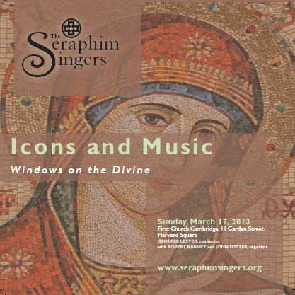
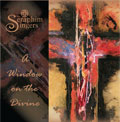

Recordings
Seraphim Singers recordings are $15, plus a $2.50 shipping fee to U.S. destinations.
Icons and Music
Envisioning the Divine by means of visual artistic media, such as religious icons and stained glass windows, has long been an integral part of religious experience. In “Icons and Music,” The Seraphim Singers demonstrate a fusion of the aural and visual contemplative imagination in mainly music of the Russian choral tradition. This performance was recorded live on March 17, 2013, at First Church in Cambridge, Massachusetts, and features organists Robert Barney and John Totter.
Click here for track listings.Audio Samples:
Gladsome Light, Alexandre Gretchaninoff:
Otche Nash (Our Father), Nikolai Kedroff
A Window on the Divine
This selection of performances by The Seraphim Singers expresses its faithfulness to the mission of performing sacred music in sacred places. With the exception of Hebrew, Latin, Greek, all are live recordings of concert performances at churches in Boston and Cambridge, Massachusetts, where the group regularly performs. These pieces showcase the ensemble’s wide-ranging repertoire, especially its commitment to new music. Though most of these pieces were composed for concert rather than worship purposes, the composers represented are profoundly engaged with the sacred content of their music. The Seraphim Singers seeks to give voice to that spiritual aim in these intimate and passionate performances, opening for audiences “a window on the divine.”
Click here for track listings.Audio Samples:
Hebrew, Latin, Greek – I. Hypodeigma, Elliott Gyger
Litanies a la Vierge Noire, Francis Poulenc
An American Sampler
“An American Sampler” leads listeners through the liturgical year via the music of American composers from the Colonial era to the present day. A highlight is the world premiere of Carson Cooman’s Exaltation, Op. 931, commissioned for the ensemble. Other featured composers include William Billings, Daniel Pinkham, Charles Ives, and Aaron Copland. This performance was recorded live on November 5, 2011, at St. Peter’s Episcopal Church in Cambridge, Massachusetts.
Click here for track listings.Audio Samples:
Have Mercy on Us, Aaron Copland
Easter Day, Domenick Argento
La Variété Française
In celebration of its 15th anniversary season, The Seraphim Singers returns to an ensemble specialty with “La Variété Française,” a compilation exploring the majestic grandeur of 20th-century French sacred music. This special anniversary performance was recorded live on February 19, 2012, at Mission Church in Boston, Massachusetts. Organists Heinrich Christensen and Glenn Goda join the ensemble for double organ works, displaying Mission Church’s magnificent George Hutchings pipe organ and a digital replica console built by Marshall & Ogletree. Featuring works by Marcel Dupré, Jean Langlais, Olivier Messiaen, and Pierre Villette.
Click here for track listings.Audio Samples:
Messe en style ancien- IV. Benedictus, Jean Langlais
Quatre Motets, Op. 9 – I. O Salutaris Hostia, Marcel Dupré